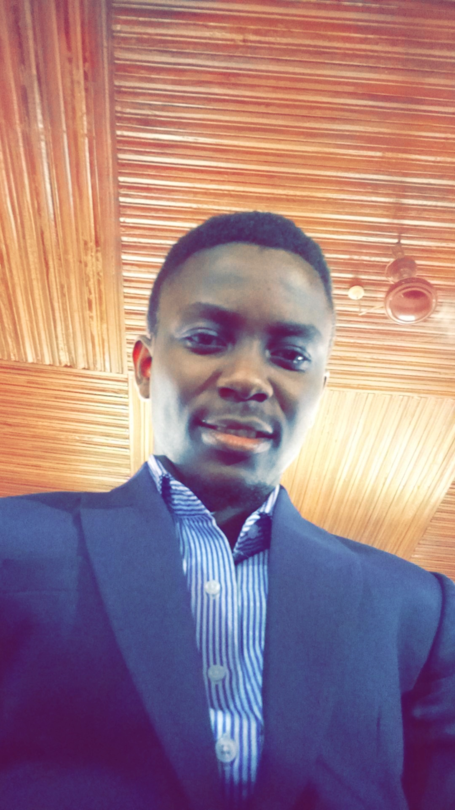

OGUNNIYI GBOLAHAN's CV

Objective Summary
Highly motivated and detail-oriented web developer with a strong passion for creating visually appealing and user-friendly websites using HTML.
Education
- University of Ibadan (2014-2018)
B.A Classics
- Project Management: Coursera (2023)
- Web Development: Udemy in view (2023)
Work Experience
GCI Museum
Curator/Project Manager
August 2020 - till date
- Manage junior staff and ensure that they do their duties effectively
- Curate old pictures as they are received for exhibition and also upload them on the Museum’s website
- Keep and update records of Old boys of the school.
- Utilize email marketing to market content
Personal Assistant to the Project Coordinator
November 2019 - August 2020
- Uploaded school records to the Museum’s website
- Covered events and uploaded reports to the website
- Liaised with vendors to ensure smooth transactions.
Certifications
- Google Project Management
Attributes & Skills
- Project Management Fundamentals: Familiarity with project management principles, methodologies and tools
- Team collaboration
- Time management
- Good communication skill
- Attention to detail
- Proactive approach to problem solving.
- Leadership
- Basic technical knowledge: basic understanding of concepts & terminologies relevant to projects, including familiarity with project management tools such as Trello, Asana or Ganttproject, etc.
- Willingness to learn and share knowledge
Referees